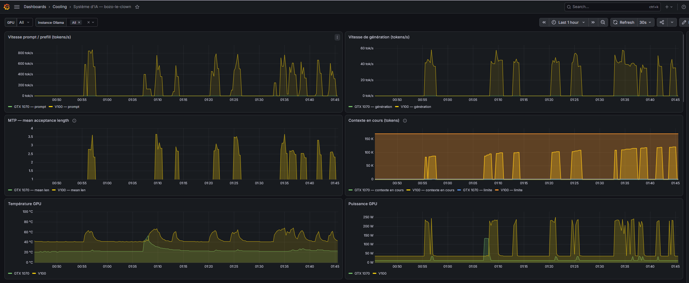
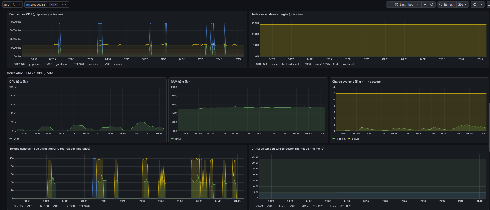
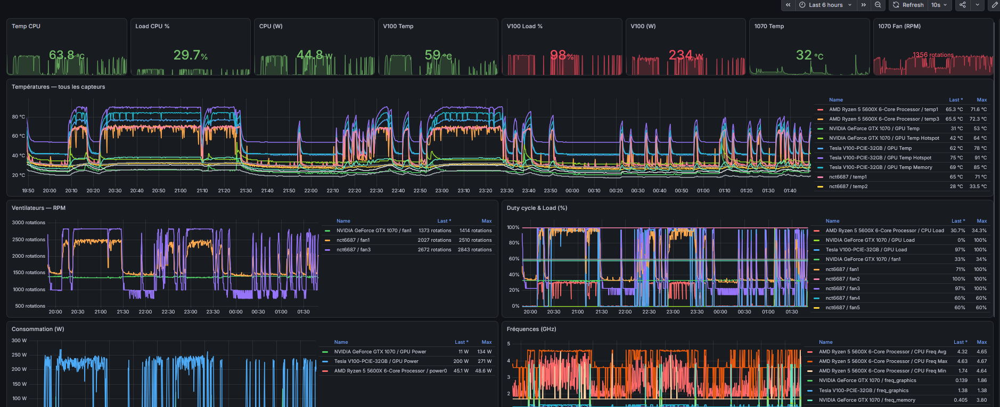

La chasse aux tokens n'a pas seulement produit des kernels. Elle a produit des outils. Et j'ai donné un nom à cette couche : LLMEW for labs — LLM Environment Ware for LABs. C'est un clin d'œil au middleware, mais ce n'est pas un middleware : ce sont des tools qui vivent dans l'environnement de l'IA, pas dans le code du modèle. Le superviseur, les dashboards, la crontab, le protocole de re-validation. Tout ce qui permet à une seule machine d'être à la fois un labo et une prod.
Le fil qui les relie, c'est le même qu'au début : je mesure. Mais cette fois, je mesure l'IA qui me mesure.
J'avais demandé un dashboard pour les tokens. Juste ça : la courbe du débit. Ce que Kolbo-5 m'a mis en place, c'est un poste de contrôle.
Au début, je n'avais pas vu la profondeur de ce qu'il avait installé. Maintenant, j'en regarde quasiment tous les panneaux. Le dashboard, panneau par panneau : la vitesse de génération et le prefill en tokens/s, le contexte en cours face à la limite de 170k, la longueur d'acceptance moyenne du MTP, la température, la puissance, les deux GPU côte à côte — la 1070 en vert, la V100 en jaune. Le cœur de la saga, monitoré en continu, ce n'est pas le MTP — c'est le couple génération / contexte : le débit en tokens/s face à la taille de contexte. C'est ce que la chasse a voulu tenir, et c'est ce que je regarde en premier.

Puis les statistiques de production : latence moyenne, erreurs sur la dernière heure (zéro), les requêtes par endpoint, la VRAM et sa marge sur 32 Go. Et enfin le niveau hôte : CPU, RAM, charge, la corrélation entre tokens générés et utilisation GPU, la VRAM face à la température.

Le même scénario s'est répété pour le thermique : j'avais demandé le monitoring des températures, j'ai reçu un tableau de bord avec tous les capteurs — CPU, la 1070, la V100 (GPU, hotspot, mémoire), les ventilateurs, la consommation, les fréquences.

Et c'est là que j'ai compris quelque chose : les seuils de mes benches n'étaient pas arbitraires. Le hotspot de la V100 monte à 91 °C sous charge ; c'est de ce chiffre réel qu'est née la règle « température max < 93 °C » qui valide (ou invalide) un bench. L'infrastructure de production a rendu le bench plus rigoureux. Le monitoring de la prod a alimenté la rigueur du labo.
L'outil central, c'est le superviseur de bench. Il est né de trois problèmes superposés.
D'abord, la machine n'avait pas la notion qu'elle était un labo. Elle traitait le banc d'essai comme une prod intouchable — et il était précisément un banc d'essai. Ensuite, il n'y avait qu'une seule V100 : le bench et l'usage se partageaient la même carte. Arrêter ollama pour charger le binaire du bench, puis le relancer, tuait l'inférence en cours. Si j'avais eu deux V100, ça aurait été plus simple — isoler par du matériel. Je n'avais qu'une carte.
Et puis il y avait le problème humain : je me levais la nuit pour relancer un bench. L'automatisation est née d'un manque de sommeil, pas d'une idée abstraite.
Alors j'ai demandé à Kolbo-5 d'étudier l'API d'Open WebUI, les séquences de chat, la façon dont l'interface était manipulée — et on a co-construit le superviseur. Il se détache pour lancer le bench en tâche de fond, reprend la main quand le bench est fini, et relance l'inférence. Il tient un lock, il stoppe et restaure le service, il ne laisse rien à l'état sauvage.
Un garde-fou est resté figé en première règle de mon prompt système : appliquer le superviseur dès qu'un risque d'interruption est probable. Sans ça, l'IA faisait le stop / charger / start à la main, et les allers-retours étaient devenus le goulot.
Sur le même principe, il y a une cron de reprise de contexte : elle détecte la fin d'une inférence et relance la génération automatiquement, avec Open WebUI qui compacte la conversation au passage — pour que la conversation continue quand le contexte est plein. C'est un chantier pas encore au point, mis en pause : la compaction automatique d'OWUI sur le retour des tools (au-delà d'un seuil) a rendu la gestion du contexte plein un peu moins urgente. Mais l'outil existe, et il sera là le jour où une longue session partira vraiment dans le mur.
Au début, le profiling était très grossier. À la fin, on était passé à nsys et CUPTI, à disséquer des kernels CUDA au step près. Et j'ai fini par lui faire refaire les profils anciens avec les outils améliorés — parce qu'un nombre mesuré avec le mauvais outil, c'est un nombre qu'on a payé pour le jeter.
Toutes ces limitations viennent d'une seule cause : le retrait du support sm_70 par NVIDIA. Il a fallu faire de l'archéologie de version pour assembler un environnement hybride — une V100, un llama récent, CUPTI, nsys — qui existe à l'intersection de versions qui ne se sont jamais croisées. Et le pire, au début, c'était CUDA 13 qui s'immiscait dans les builds, un enfer. C'est là que j'ai demandé un environnement de build reproductible pour mettre ces problèmes derrière nous.
La suite, c'est la mémoire. Le contexte d'une IA n'est pas infini, et le travail qu'elle a déjà fait est une mémoire qui doit survivre à ses propres recharges. Alors Kolbo-5 documente lui-même, dans les README, ce qui se passe — il affine ses notes petit à petit pour pouvoir se restaurer en un rien de temps, d'une conversation à l'autre. Je lui ai même appris à aller lire ses propres conversations, via le superviseur : il a un token pour ça.
Un dernier exemple, plus léger. J'avais demandé à Kolbo-5 de me ranger ma collection de musique, à travers deux sauts SSH. J'avais une solution avec interruption. Il m'a dit : « pourquoi attendre, on peut le faire sans downtime. » J'ai dit ok. J'ai sorti le coca et le popcorn, parce qu'il a galéré comme un dingue. C'était rigolo.
Depuis, mon lecteur affiche bien toutes les pistes, avec les bons noms. Du grand art.
C'est ça, la « boucle » : une IA qui veille, qui s'auto-répare, qui sort de sa boîte, avec quelques mécanismes simples. Et le prochain sujet sérieux a déjà un nom : le cache KV. Mais ça, c'est la suite.